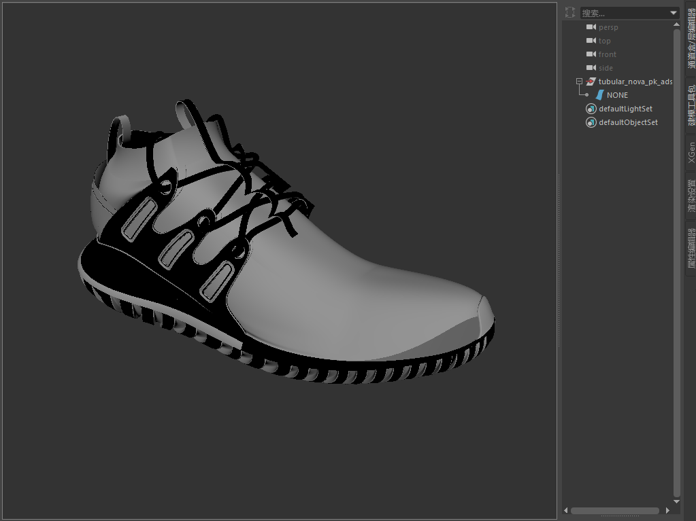
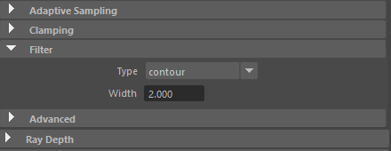

本教程使用 Arnold 中的卡通和 clip_geo 着色器实现的风格化效果示例
本教程将介绍如何创建可用于广告推广活动或运动图形动画的有趣图像。我们将介绍如何使用卡通*着色器准备和着色几何体。此外，我们还将介绍如何将几何体导出为可用作程序的 .ass（Arnold 场景源）文件，以使场景保持轻巧和响应迅速。然后，我们将实例化这些程序，并使用 *clip_geo 着色器创建炫酷的风格化效果。有关此效果的更多示例，请单击此处。
在本教程中，我们将使用一个免费的鞋模型（可从 Grabcad 模型库下载该模型）。
*卡通*着色器目前无法与 GPU 结合使用。
使用此技术可以实现的不同样式变化效果
首先，下载 zip 文件（上面的链接）。
导入鞋模型：tubular nova pk ads.IGS（Z 轴）。
对其进行定位和定向，使其位于场景栅格中心。

在 Maya 中导入的 .STEP 鞋模型
现在，我们将默认的 Lambert 替换为 Arnold 卡通着色器。
打开 Hypershade 窗口。
创建一个*卡通*着色器，并将其指定给鞋。
在 edge_detection 下，将 angle_threshold 从 180 减小到 10 左右。这将在鞋底显示具有更多细节的边。
创建一个工具着色器，并将其连接到卡通着色器的 *emission_color。将 *emission_weight 增大到 1。
将工具的“颜色模式”(Color Mode)更改为 obj，并将“着色模式”(Shade Mode)更改为 ndoteye。这将得到一些有趣的颜色以及实现平面卡通样式着色。
使用 color_correct 着色器可优化工具着色器呈现的颜色着色效果的色调、饱和度等值。
要查看 toon_edge，必须将 filter_type（采样设置）更改为“轮廓”(Contour)。请注意，增加 contour_filter_width（采样设置）值将会增加渲染时间。如果看起来太厚，请尝试将其减小到 1。

渲染设置(Render Settings)：Arnold >“Arnold 渲染器”(Arnold Renderer)选项卡 >“过滤器”(Filter) >“类型”(Type)：轮廓(Contour)
utility -> color_correct -> toon
现在，我们要将完成的运动鞋几何体导出为 .ass 文件。这样，我们便可使用程序，以便保持场景轻巧和响应迅速。
使用默认导出设置导出为 Arnold 场景源 (.ass)
接下来，我们要创建一个 Arnold 替代对象*，我们可以在其中导入之前导出的 *.ass 文件。利用替代对象，您可以将几何体数据的加载延缓到渲染时进行，从而保持场景轻巧且适宜（交互）工作。在创建多个实例时，这非常有用。
创建一个新场景。
转到“Arnold -> 替代对象”(Arnold -> Standin)。
在替代对象中选择“路径”(Path)文件夹，然后选择我们之前导出的 .ass 文件。
在替代对象中加载 shoe .ass 文件。视口绘制模式(Viewport Draw Mode)：多边形线(Polywire)。
现在，我们要创建程序*的多个实例，并使其随机分布在原始鞋程序周围。它们将用作剪切几何体，当为其指定 *clip_geo 着色器后可提供效果。
程序的位置和旋转情况将确定最终效果的外观，因此可以随意尝试执行本教程此部分的操作。例如，您也可以使用 XGen 富有创意地分布更多实例。
“视口 > 显示模式”(Viewport > Display Mode)设置为“线框”(wireframe)的鞋程序
创建 clip_geo 着色器，并将其指定给实例化程序（不是原始程序）。clip_geo 程序将从与几何体相交的任何形状剪裁几何体。在本例中，实例化程序将剪裁原始鞋程序。
剪裁原始鞋程序的实例化程序（添加了地板平面并指定了另一个卡通着色器）
对效果满意后，就可以开始渲染了。您也可以尝试为程序设置动画，以创建可用于运动图形动画的效果。
就是这样。您已看完本教程。做得不错！我们建议您多花一些时间阅读 MtoA 用户手册，该手册中提供了像本教程这样的其他教程。